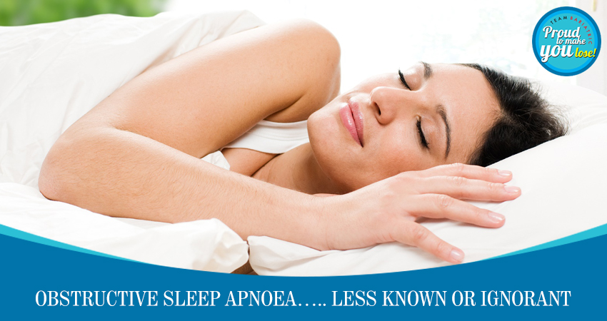

Understanding Obstructive Sleep Apnoea: How Bariatric Surgery Can Help
While running in and out of the outdoor patients Department, I often see obese people in the waiting area who are sleeping or snoring in the daytime. I wonder whether are they are unaware of a serious disorder called obstructive Sleep Apnoea.
As a bariatric surgical nurse, I thought that it was my duty to elaborate a few things about this fatal disease and how bariatric surgery will prove helpful in such people. Unfortunately, Sleep Apnoea mostly goes undiagnosed because of the lack of awareness amongst patients and doctors alike.
There is a short stop in our breathing when we are sleeping at night. Normally they are 5 or less in an hour. These stops in the breathing or apneic episodes keep on increasing in number and duration as the disease progress to a stage that there is sometimes a permanent pause or that the brain does not send signal to breathe.
This serious disorder can result in respiratory failure and strokes. One need to really identify this and get medical help. A non-invasive ventilation mask might be needed for a few hours in the day and overnight
Weight loss in such people results in either a cure or such stage that they might not suffer from the consequences of this disease. So if you are overweight and snore, wake up more than once in night, fall asleep during day time, get yourself a bariatric consult ASAP.
Back to Blog